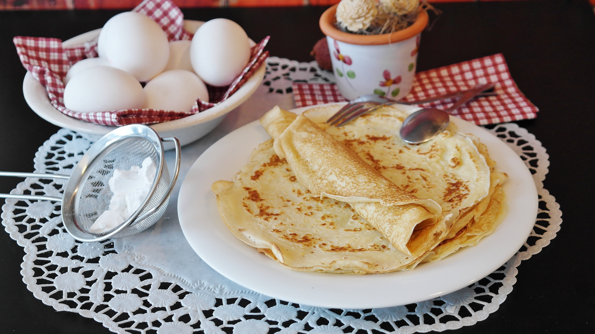

Home
German pancakes

Description
A quick and fast recipe to cook german style pancakes.
Only 5 minutes of preparation and 10 minutes of cooking
time, making for a fast breakfast.
Ingredients
- 2 eggs
- 2 tablespoons white sugar
- 3 tablespoons all-purpose flour
- ¾ cup milk
Steps
- Place the eggs, sugar, flour, and milk into a blender.
Process on low speed until smooth.
- Heat a large skillet or griddle over medium heat. Pour about 1/4 cup batter
at a time (or more for larger pancakes) into the hot skillet. Tilt the skillet
to achieve a round shape. Cook until golden, then flip and brown on the other side.
Serve hot with syrup or fresh berries and whipped cream.